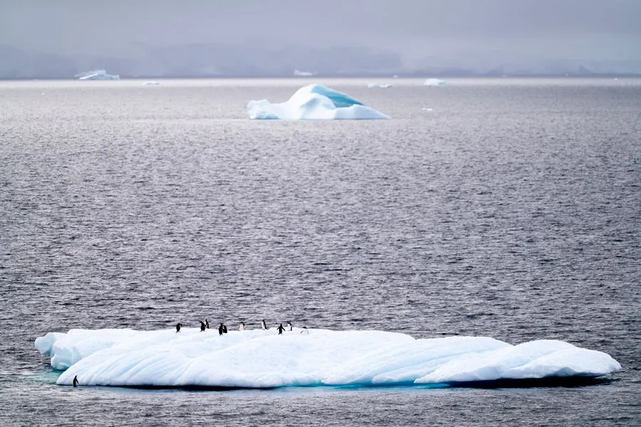
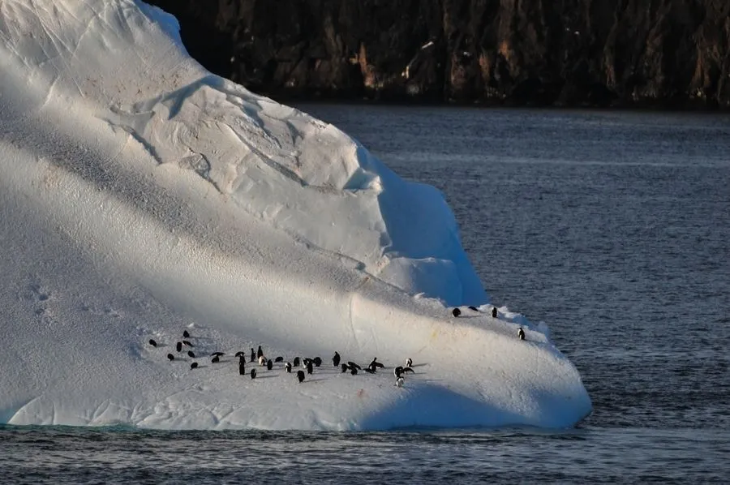
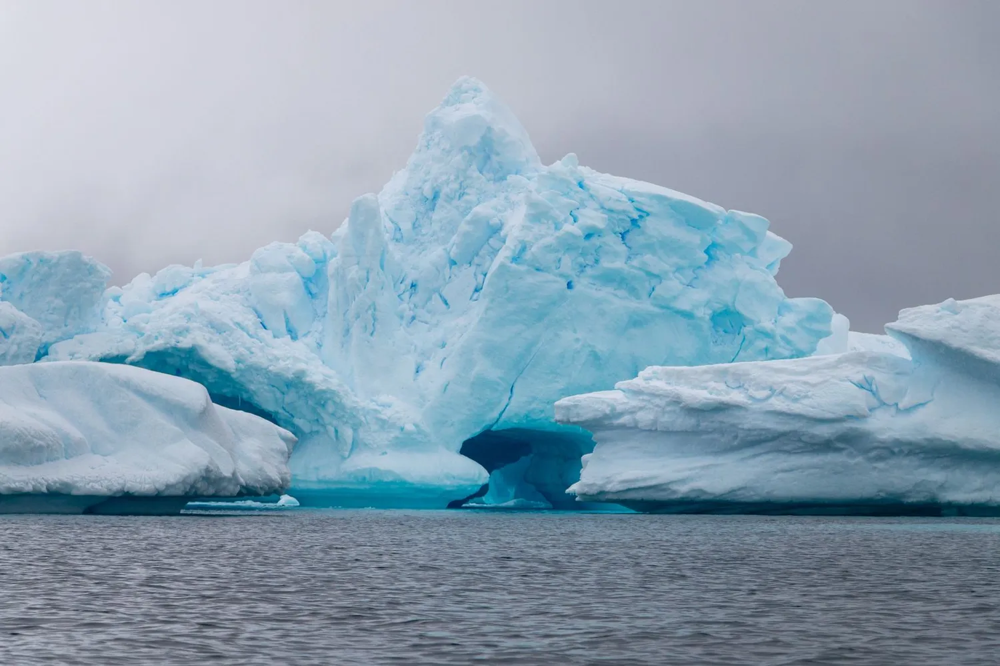

O único continente sem fronteiras, onde icebergs do tamanho de prédios flutuam em silêncio absoluto.
Não existe estrada, aeroporto comercial ou população fixa. Chegar à Antártida exige cruzar a passagem de Drake de navio a partir de Ushuaia, na Patagônia argentina, e o esforço é recompensado por uma paisagem que não tem equivalente em nenhum outro lugar do planeta.
Nossa curadoria trabalha com embarcações de expedição pequenas, com no máximo duzentos passageiros, que permitem desembarques diários em terra firme, algo proibido para navios maiores sob os acordos internacionais de proteção ao continente.
As águas mais temidas do mundo separam a América do Sul da Antártida em cerca de dois dias de navegação. Palestras a bordo sobre glaciologia e vida selvagem preparam os passageiros, enquanto albatrozes gigantes acompanham o navio durante toda a travessia.
Colônias de milhares de pinguins-gentoo e chinstrap recebem os desembarques em botes infláveis, sem cercas ou distância artificial, apenas as regras de conservação que mantêm humanos a uma distância segura e respeitosa. É comum um pinguim curioso se aproximar por conta própria.
À tarde, o navio navega devagar por canais estreitos entre icebergs de formas esculpidas pelo vento e pela água, enquanto baleias-jubarte e orcas aparecem com frequência surpreendente. O silêncio ali é tão absoluto que a tripulação pede para desligar motores por alguns minutos, só para ouvir.
Algumas expedições oferecem uma noite de acampamento na neve antártica, em sacos de dormir térmicos sobre a costa gelada, sem tendas. É opcional e limitado a poucos passageiros por viagem, mas quem topa descreve como a experiência mais extrema e memorável de toda uma vida de viagens.


